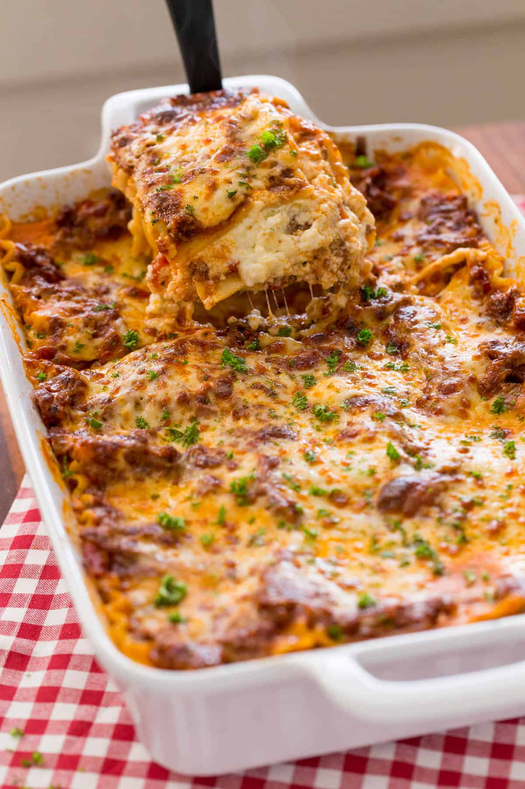

Lasagna Recipe

Fantastic Lasagna
Lasagna is the perfect family meal - it keeps, reheats and freezes really well and it is so nice to have something in the fridge to enjoy throughout the week.
Ingredients for Lasagna
1 small onion finely diced
2 large garlic cloves minced
1/4 cup red wine or beef broth
24 oz Marinara Sauce(3cups)
1/4 tsp black pepper ground
2 Tbsp parsley finely chopped
9 lasagna noodles for a 9x13 casserole dish
Ingredients for Cheese Sauce
16 oz low-fat cottage cheese
15 oz reduced fat ricotta cheese
2 Tbsp parsley finely chopped, plus more to garnish
4 cups mozzarella cheese shredded, divided
Substitue for Red Wine?
If you don't have red wine on hand, or prefer not to use it, you can substitute with beef broth or beef stock.
Instructions
How to Make Meat Sauce:
Place a deep pan or dutch oven over medium/high heat and add 1 Tbsp olive oil, 1 lb ground beef and diced onion. Saute, breaking up the meat, for 5 minutes or until beef is no longer pink. Add pressed garlic and sauté another minute until fragrant.
Add 1/4 cup wine and stir for 2 minutes or until wine is nearly evaporated. Add 3 cups marinara, 1/2 tsp salt, 1/4 tsp pepper, 1/4 tsp thyme, 1/2 tsp sugar and 2 Tbsp parsley. Bring to a simmer then cover and cook 5 minutes.
How to Make Cheese Sauce:
In a large mixing bowl, combine 16 oz Cottage Cheese, 15 oz Ricotta, 1 cup mozzarella, 1 egg and 2 Tbsp parsley. Mix well
How to Make Lasagna:
Preheat oven to 375˚F. Bring a large pot of water to a boil. Add salt and 9 lasagna noodles. Cook until al dente according to package instructions.
Spread 1/2 cup meat sauce in the bottom of a deep 9x13 casserole dish.
Add 3 noodles, spread on 1/3 of the meat sauce and sprinkle with 1 cup mozarella cheese. Spoon on and spread the top with 1/2 of your cheese sauce.
Repeat until you have 3 layers of noodles:
Add 3 noodles, 1/3 meat sauce, 1 cup mozarella cheese, 1/2 cheese sauce
Add 3 noodles, remaining 1/3 meat sauce, remaining 1 cup mozarella.
Poke 9-12 toothpicks over the surface of your lasagna (to keep the foil from sticking to the cheese). Cover with foil and bake at 375˚F for 45 minutes.
Remove foil and broil for 3 to 5 minutes, or until cheese turns golden. Let lasagna rest 30 min before slicing.